library(tidyverse)
dane <- read.csv("dane/gapminder_regions.csv", encoding = "UTF-8") |>
mutate(across(where(is.character), as.factor))
dane2007 <- dane |>
filter(year == 2007)
# tabele pomocnicze wykorzystywane w kilku przykładach
europa2007 <- dane2007 |>
filter(kontynent == "Europa")
cztery_kraje <- dane |>
filter(kraj %in% c("Polska", "Niemcy", "Hiszpania", "Portugalia"),
year %in% c(1957, 1977, 2007))Załącznik A — Katalog typów wykresów
Katalog zestawia podstawowe typy wykresów wykorzystywane w skrypcie. Dla każdego typu podaje odnośnik do dodatkowych przykładów w The R Graph Gallery, opis tego, co przedstawia wykres, kod ggplot2 gotowy do uruchomienia i wykres, który kod tworzy. Kod zawiera dane, mapowanie, obiekt geometryczny, podpisy (labs()) i motyw (theme_bw()); skale i kolory dobiera się według Rozdział 18. Wybór wykresu do pytania badawczego omawia Rozdział 17.
Przykłady wykorzystują dane Gapminder (Sekcja 3.1):
A.1 Podział wykresów
Typy wykresów pogrupowano według klasyfikacji Wilkego (2019), opisanej w rozdziale „Directory of visualizations”. Klasyfikacja dzieli wykresy według tego, co przedstawiają, i jest jedną z możliwych klasyfikacji. Obejmuje sześć kategorii: ilości, rozkłady, proporcje, relacje, dane przestrzenne i niepewność; ich opis zawiera Sekcja 14.1.
Piktogramy i objaśnienia wszystkich typów wykresów w tych kategoriach zawiera Rozdział 14.
Katalog wprowadza do klasyfikacji dwie zmiany. Wykresy przedstawiające wartości w kolejnych latach tworzą osobną grupę zmiany w czasie — Wilke (2019) zalicza wykres liniowy do relacji. Grupa niepewności została pominięta, ponieważ skrypt wykorzystuje wykresy zakresu tylko do przedstawienia zmienności obserwacji (Sekcja 14.8).
A.2 Zestawienie
Tabela przypisuje każdy typ wykresu do jednej z grup opisanych w Sekcja A.1. Kolumna „Funkcja” podaje funkcję ggplot2 albo pakietu dodatkowego, a kolumna „Przykład w skrypcie” — miejsce, w którym wykres wykorzystano w analizie danych.
| Grupa | Wykres | Funkcja | Przykład w skrypcie |
|---|---|---|---|
| ilości | słupkowy | geom_col() |
Sekcja 24.4.2 |
| ilości | słupkowy zgrupowany | geom_col(position = "dodge") |
Rycina 24.5 |
| ilości | słupkowy skumulowany | geom_col(position = "stack") |
Sekcja 24.4.4 |
| ilości | kropkowy | geom_point() |
Sekcja 12.6 |
| ilości | heatmapa (kafelkowy) | geom_tile() |
Sekcja 22.4 |
| rozkłady | histogram | geom_histogram() |
Sekcja 20.3 |
| rozkłady | wykres gęstości | geom_density() |
Sekcja 15.2 |
| rozkłady | pudełkowy | geom_boxplot() |
Sekcja 21.4 |
| rozkłady | skrzypcowy | geom_violin() |
Sekcja 15.3 |
| rozkłady | grzbietowy | ggridges::geom_density_ridges() |
Sekcja 23.4.1 |
| rozkłady | dystrybuanta empiryczna | stat_ecdf() |
Sekcja 17.4 |
| proporcje | słupkowy liczności | geom_bar() |
Sekcja 15.5 |
| proporcje | słupkowy skumulowany do 100% | geom_bar(position = "fill") |
Sekcja 15.5 |
| proporcje | kołowy | geom_col() + coord_polar() |
Sekcja 17.5 |
| proporcje | treemap | treemapify::geom_treemap() |
Sekcja 23.4.1 |
| relacje | rozrzutu | geom_point() |
Sekcja 4.2 |
| relacje | bąbelkowy | geom_point(aes(size = )) |
Sekcja 16.1 |
| relacje | macierz wykresów rozrzutu | GGally::ggpairs() |
Sekcja 22.6 |
| relacje | korelogram | GGally::ggcorr() |
Sekcja 16.2 |
| zmiany w czasie | liniowy | geom_line(), stat_summary(geom = "line") |
Sekcja 20.4 |
| zmiany w czasie | punkt z zakresem | stat_summary(geom = "pointrange") |
— |
| zmiany w czasie | wykres wstęgowy | geom_ribbon(), stat_summary(geom = "ribbon") |
Sekcja 24.4.1 |
| dane przestrzenne | mapa (kolor obszaru) | geom_sf(aes(fill = )) |
Sekcja 21.5 |
| dane przestrzenne | kartodiagram (wielkość znaku) | geom_sf(aes(size = )) |
Sekcja 22.5.3 |
| dane przestrzenne | kartodiagram strukturalny (wykresy kołowe) | scatterpie::geom_scatterpie() |
Sekcja 22.5.3 |
A.3 Ilości
Wykresy ilości przedstawiają wartości liczbowe dla kategorii.
A.3.1 Wykres słupkowy
Dodatkowe przykłady: R Graph Gallery — wykres słupkowy
Wysokość (długość) słupka odpowiada wartości przypisanej do kategorii, np. PKB per capita kraju. Oś przedstawiająca wartości zaczyna się od 0 (Sekcja 12.5), a kategorie porządkuje się według wartości (Sekcja 12.6).
cztery_kraje |>
filter(year == 2007) |>
ggplot(aes(x = gdpPercap, y = fct_reorder(kraj, gdpPercap))) +
geom_col() +
labs(title = "PKB per capita w czterech krajach, 2007",
x = "PKB per capita [USD]", y = NULL) +
theme_bw()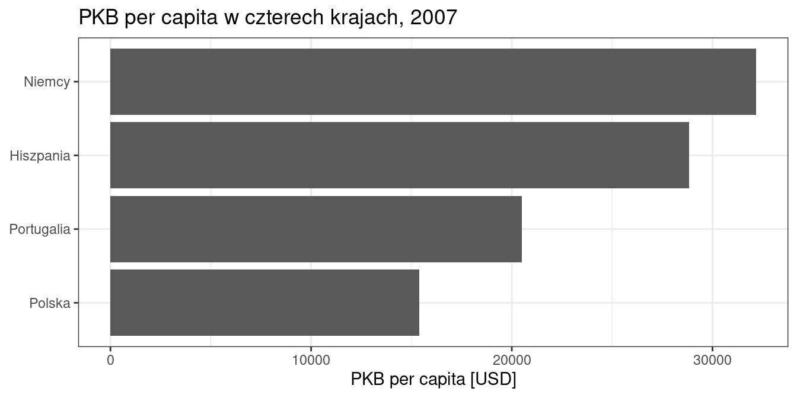
geom_col() rysuje słupki o wysokości podanej w danych; geom_bar() zlicza obserwacje w kategoriach (Sekcja A.5).
A.3.2 Wykres słupkowy zgrupowany
Dodatkowe przykłady: R Graph Gallery — wykres słupkowy zgrupowany i skumulowany
Przedstawia wartości zmiennej ilościowej według dwóch zmiennych jakościowych: na każdej pozycji osi znajduje się grupa słupków, np. kraj, a w grupie — słupki kolejnych lat.
ggplot(cztery_kraje, aes(x = kraj, y = gdpPercap, fill = factor(year))) +
geom_col(position = "dodge") +
labs(title = "PKB per capita w czterech krajach, 1957, 1977 i 2007",
x = NULL, y = "PKB per capita [USD]", fill = "Rok") +
theme_bw()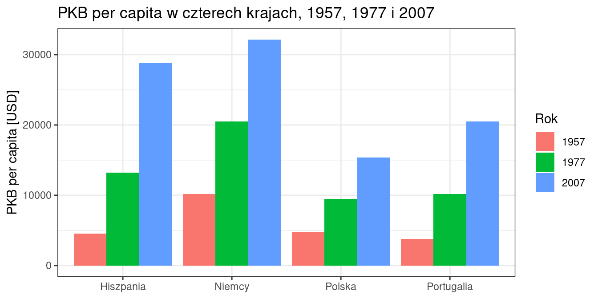
A.3.3 Wykres słupkowy skumulowany
Dodatkowe przykłady: R Graph Gallery — wykres słupkowy zgrupowany i skumulowany
Słupki kategorii drugiej zmiennej są ustawione jeden na drugim; wysokość całego słupka jest sumą. Stosuje się go, gdy suma ma znaczenie, np. liczba ludności kontynentu w podziale na subregiony.
# kolory subregionów: odcienie pomarańczowego dla Afryki, odcienie niebieskiego dla Europy
kolory_subregionow <- c("Afryka Północna" = "#fdd0a2", "Afryka Południowa" = "#fdae6b",
"Afryka Środkowa" = "#fd8d3c", "Afryka Wschodnia" = "#e6550d",
"Afryka Zachodnia" = "#a63603", "Europa Północna" = "#c6dbef",
"Europa Południowa" = "#6baed6", "Europa Wschodnia" = "#3182bd",
"Europa Zachodnia" = "#08519c")
# suma ludności w subregionach: jeden odcinek słupka dla każdego subregionu
dane2007 |>
filter(kontynent %in% c("Europa", "Afryka")) |>
group_by(kontynent, subregion_pl) |>
summarise(pop = sum(pop), .groups = "drop") |>
ggplot(aes(x = kontynent, y = pop / 1000000, fill = subregion_pl)) +
geom_col(position = "stack", colour = "white", linewidth = 0.3) +
scale_fill_manual(values = kolory_subregionow) +
labs(title = "Liczba ludności Afryki i Europy według subregionów, 2007",
x = NULL, y = "Liczba ludności [mln]", fill = "Subregion") +
theme_bw()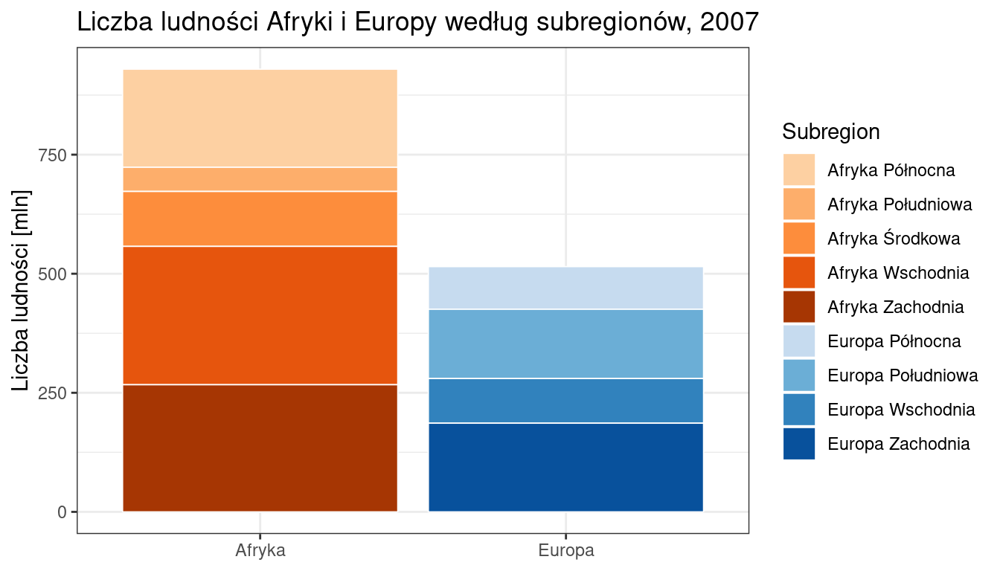
A.3.4 Wykres kropkowy
Dodatkowe przykłady: R Graph Gallery — wykres lizakowy; galeria nie ma osobnej strony wykresu kropkowego, a wykres lizakowy łączy punkt z osią odcinkiem.
Punkt umieszczony na osi wskazuje wartość kategorii. W odróżnieniu od wykresu słupkowego oś nie musi zaczynać się od 0, dlatego różnice między kategoriami są lepiej widoczne.
ggplot(europa2007, aes(x = lifeExp, y = fct_reorder(kraj, lifeExp))) +
geom_point() +
labs(title = "Oczekiwana długość życia w krajach Europy, 2007",
x = "Oczekiwana długość życia [lata]", y = NULL) +
theme_bw()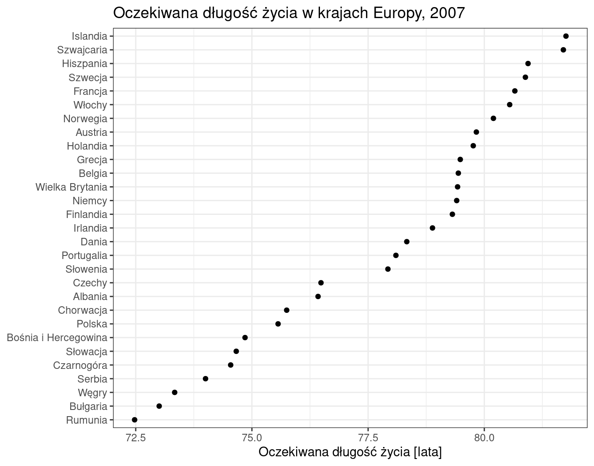
A.3.5 Heatmapa (wykres kafelkowy)
Dodatkowe przykłady: R Graph Gallery — heatmapa
Kolor kafelka przedstawia wartość dla pary kategorii, np. kraju i roku.
dane |>
filter(kontynent == "Europa") |>
ggplot(aes(x = year, y = kraj, fill = lifeExp)) +
geom_tile() +
labs(title = "Oczekiwana długość życia w krajach Europy, 1952–2007",
x = "Rok", y = NULL, fill = "Oczekiwana długość\nżycia [lata]") +
theme_bw()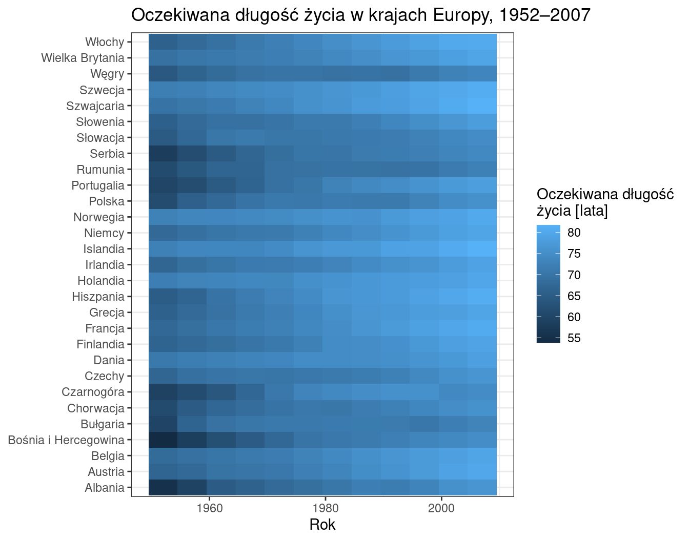
A.4 Rozkłady
Wykresy rozkładu przedstawiają, jak często występują wartości zmiennej ilościowej.
A.4.1 Histogram
Dodatkowe przykłady: R Graph Gallery — histogram
Zakres zmiennej jest dzielony na przedziały o równej szerokości; wysokość słupka to liczba obserwacji w przedziale. Szerokość przedziału (binwidth) zmienia obraz rozkładu (Sekcja 15.1).
ggplot(dane2007, aes(x = lifeExp)) +
geom_histogram(binwidth = 5, fill = "grey40", colour = "white") +
labs(title = "Oczekiwana długość życia, 142 kraje, 2007",
x = "Oczekiwana długość życia [lata]", y = "Liczba krajów") +
theme_bw()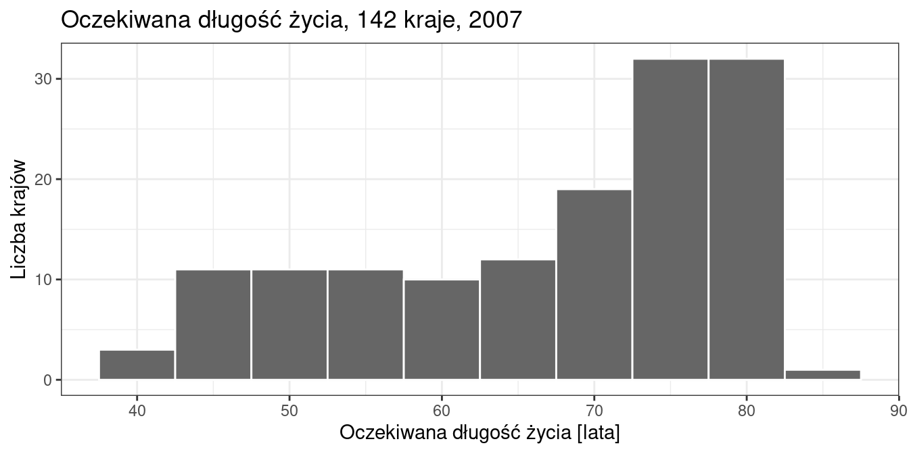
A.4.2 Wykres gęstości
Dodatkowe przykłady: R Graph Gallery — wykres gęstości
Przedstawia rozkład jako ciągłą krzywą. Kilka krzywych na jednym wykresie porównuje się łatwiej niż kilka nakładających się histogramów.
dane2007 |>
filter(kontynent %in% c("Europa", "Afryka", "Azja")) |>
ggplot(aes(x = lifeExp, fill = kontynent)) +
geom_density(alpha = 0.5) +
labs(title = "Oczekiwana długość życia w Afryce, Azji i Europie, 2007",
x = "Oczekiwana długość życia [lata]", y = "Gęstość", fill = "Kontynent") +
theme_bw()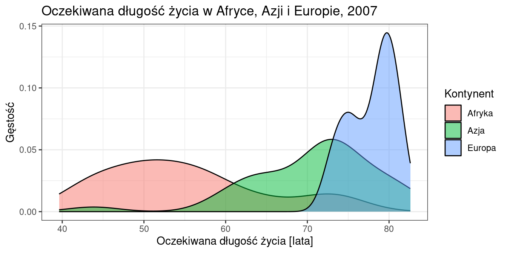
A.4.3 Wykres pudełkowy
Dodatkowe przykłady: R Graph Gallery — wykres pudełkowy
Przedstawia medianę (linia w pudełku), kwartyle (krawędzie pudełka), zakres wartości w odległości do 1,5 × IQR od krawędzi pudełka (wąsy) i wartości odstające (punkty) (Sekcja 15.3).
ggplot(dane2007, aes(x = kontynent, y = lifeExp)) +
geom_boxplot() +
labs(title = "Oczekiwana długość życia według kontynentu, 2007",
x = NULL, y = "Oczekiwana długość życia [lata]") +
theme_bw()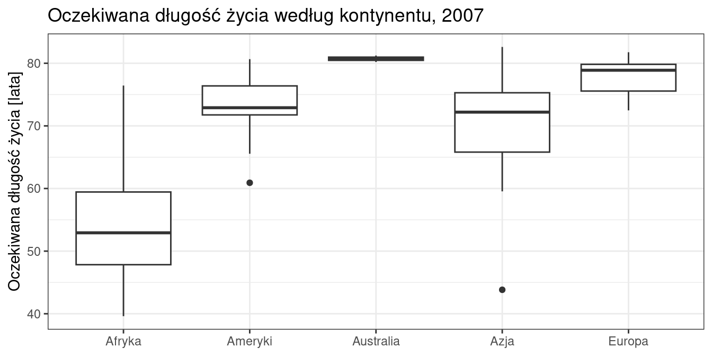
A.4.4 Wykres skrzypcowy
Dodatkowe przykłady: R Graph Gallery — wykres skrzypcowy
Szerokość „skrzypiec” w danym miejscu przedstawia gęstość obserwacji. Wykres pokazuje rozkłady z kilkoma skupieniami, których nie widać na wykresie pudełkowym.
ggplot(dane2007, aes(x = kontynent, y = gdpPercap)) +
geom_violin() +
labs(title = "PKB per capita według kontynentu, 2007",
x = NULL, y = "PKB per capita [USD]") +
theme_bw()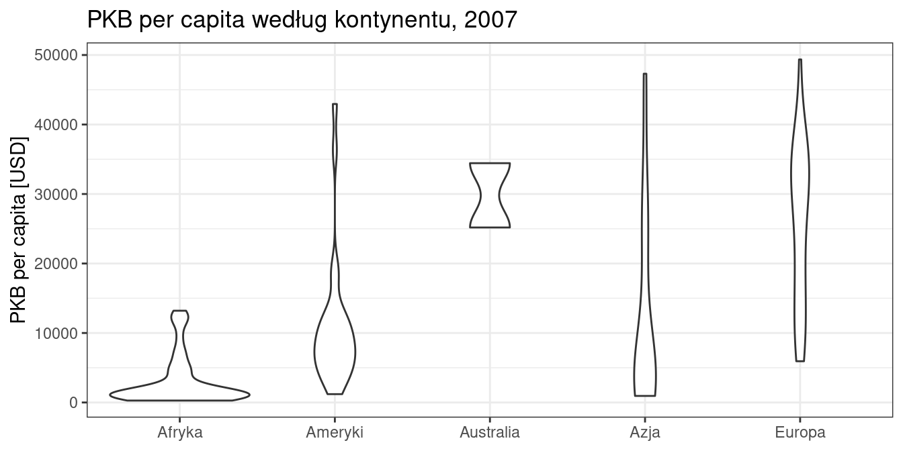
A.4.5 Wykres grzbietowy
Dodatkowe przykłady: R Graph Gallery — wykres grzbietowy
Krzywe gęstości kilku grup ustawione jedna nad drugą, ze wspólną osią x.
library(ggridges)
ggplot(dane, aes(x = lifeExp, y = factor(year))) +
geom_density_ridges() +
labs(title = "Oczekiwana długość życia, 142 kraje, 1952–2007",
x = "Oczekiwana długość życia [lata]", y = "Rok") +
theme_bw()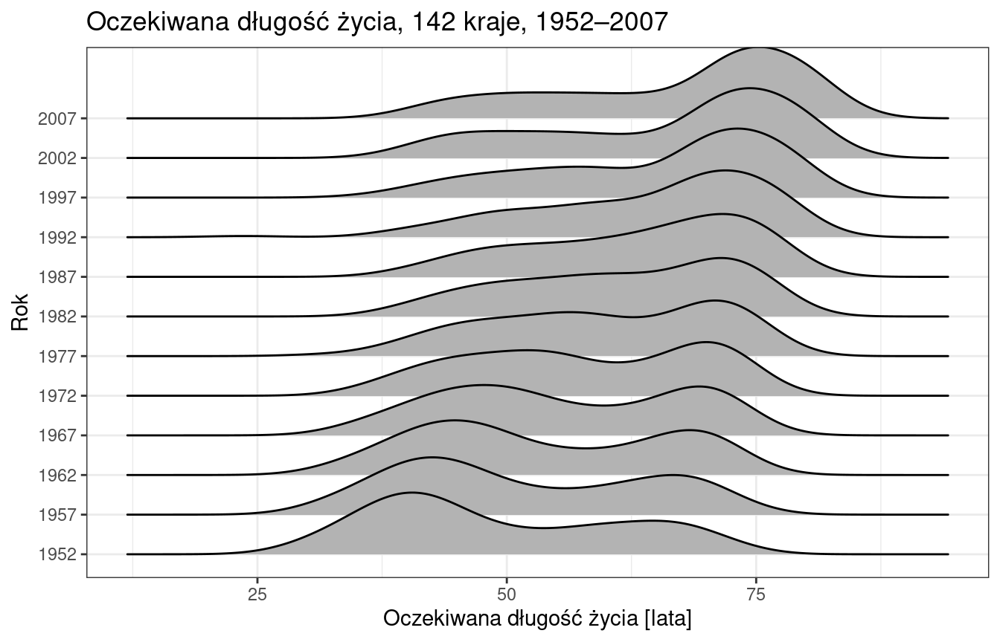
A.4.6 Dystrybuanta empiryczna
Dodatkowe przykłady: galeria R Graph Gallery nie ma strony poświęconej temu wykresowi; przykłady zawiera dokumentacja funkcji stat_ecdf().
Definicję podaje Sekcja 14.4, a zastosowanie — Sekcja 17.4.
ggplot(dane2007, aes(x = lifeExp)) +
stat_ecdf() +
labs(title = "Dystrybuanta empiryczna oczekiwanej długości życia, 142 kraje, 2007",
x = "Oczekiwana długość życia [lata]", y = "Udział krajów") +
theme_bw()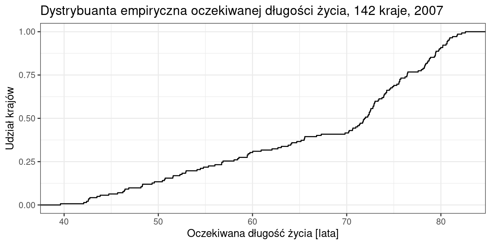
A.5 Proporcje
Wykresy proporcji przedstawiają podział całości na części.
A.5.1 Wykres słupkowy liczności
Dodatkowe przykłady: R Graph Gallery — wykres słupkowy
geom_bar() zlicza obserwacje w każdej kategorii (Rycina 13.7).
ggplot(dane2007, aes(x = kontynent)) +
geom_bar() +
labs(title = "Liczba krajów na kontynentach, 2007",
x = NULL, y = "Liczba krajów") +
theme_bw()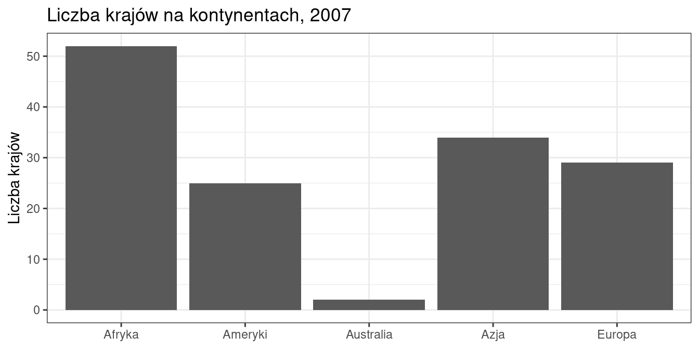
A.5.2 Wykres słupkowy skumulowany do 100%
Dodatkowe przykłady: R Graph Gallery — wykres słupkowy zgrupowany, skumulowany i skumulowany do 100%
Każdy słupek ma tę samą wysokość (100%), a jego podział przedstawia udziały kategorii drugiej zmiennej.
dane2007 |>
filter(income_grp_pl != "") |>
ggplot(aes(x = kontynent, fill = income_grp_pl)) +
geom_bar(position = "fill") +
labs(title = "Udział grup dochodowych wśród krajów każdego kontynentu, 2007",
x = NULL, y = "Udział krajów", fill = "Grupa dochodowa") +
theme_bw()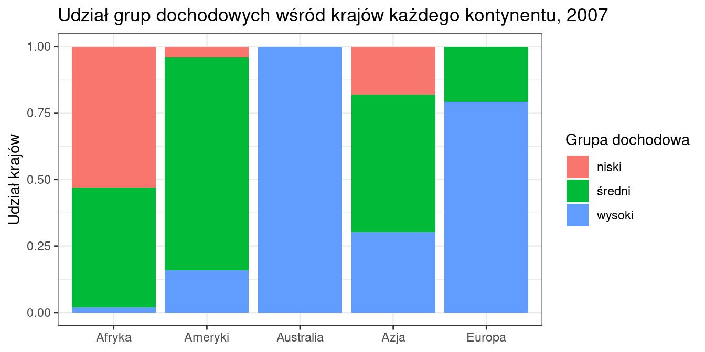
A.5.3 Wykres kołowy
Dodatkowe przykłady: R Graph Gallery — wykres kołowy
Kąt wycinka przedstawia udział kategorii w całości. Udziały o zbliżonej wielkości porównuje się na wykresie kołowym trudniej niż na słupkowym (Sekcja 12.7). Motyw theme_void() usuwa osie i siatkę układu biegunowego; wartości odczytuje się z wielkości wycinków.
dane2007 |>
group_by(kontynent) |>
summarise(liczba = n()) |>
ggplot(aes(x = "", y = liczba, fill = kontynent)) +
geom_col() +
coord_polar(theta = "y") +
labs(title = "Udział kontynentów w liczbie krajów, 2007", fill = "Kontynent") +
theme_void()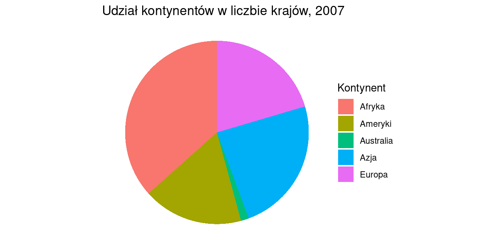
A.5.4 Treemap
Dodatkowe przykłady: R Graph Gallery — treemap; przykłady galerii wykorzystują pakiet treemap, a kod poniżej — pakiet treemapify.
Prostokąt jest dzielony na mniejsze prostokąty, których pole przedstawia udział w całości, np. liczbę ludności kraju. Prostokąty można zagnieżdżać, np. kraje w obrębie kontynentów. Mapowanie label i warstwa geom_treemap_text() dodają nazwy krajów; nazwy mieszczą się w prostokątach o wystarczającym polu.
library(treemapify)
ggplot(dane2007, aes(area = pop, fill = kontynent, subgroup = kontynent, label = kraj)) +
geom_treemap(colour = "white") +
geom_treemap_subgroup_border() +
geom_treemap_text(colour = "white", place = "centre") +
labs(title = "Liczba ludności 142 krajów, 2007", fill = "Kontynent") +
theme_bw()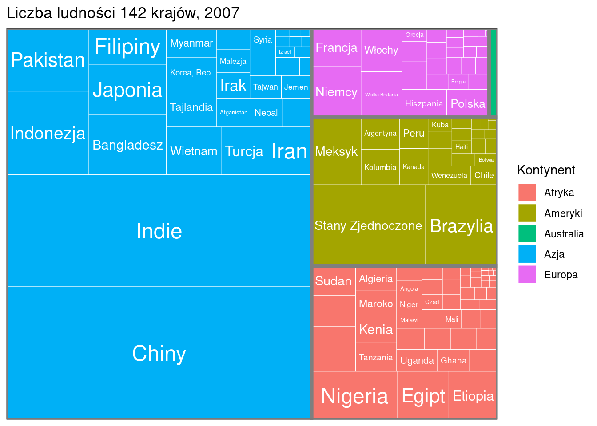
A.6 Relacje
Wykresy relacji przedstawiają zależność między zmiennymi ilościowymi (Rozdział 16).
A.6.1 Wykres rozrzutu i wykres bąbelkowy
Dodatkowe przykłady: R Graph Gallery — wykres rozrzutu, wykres bąbelkowy
Jedna obserwacja to jeden punkt. Trzecią zmienną przedstawia kolor (colour), kształt (shape) albo wielkość punktu (size) — w tym ostatnim przypadku jest to wykres bąbelkowy.
ggplot(dane2007, aes(x = gdpPercap, y = lifeExp, size = pop / 1000000)) +
geom_point(alpha = 0.5) +
scale_x_log10() +
labs(title = "Oczekiwana długość życia a PKB per capita, 142 kraje, 2007",
x = "PKB per capita [USD, skala logarytmiczna]",
y = "Oczekiwana długość życia [lata]", size = "Liczba ludności [mln]") +
theme_bw()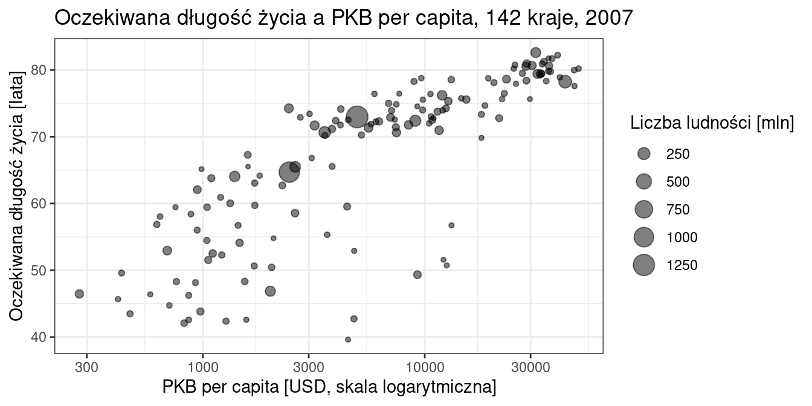
A.6.2 Macierz wykresów rozrzutu i korelogram
Dodatkowe przykłady: R Graph Gallery — korelogram, macierz wykresów rozrzutu i korelogram w pakiecie GGally
Macierz wykresów rozrzutu przedstawia wykres rozrzutu dla każdej pary zmiennych, a korelogram — współczynniki korelacji jako kolory pól. Oba wykresy wykorzystują współczynnik korelacji Spearmana (Sekcja 16.2). Argument columnLabels nadaje zmiennym w macierzy opisy; korelogram podaje nazwy kolumn tabeli (Sekcja 3.1).
library(GGally)
dane2007 |>
mutate(pop_mln = pop / 1000000) |>
select(lifeExp, gdpPercap, pop_mln) |>
ggpairs(upper = list(continuous = wrap("cor", method = "spearman")),
columnLabels = c("Oczekiwana długość\nżycia [lata]", "PKB per capita [USD]", "Ludność [mln]")) +
labs(title = "Macierz wykresów rozrzutu, 142 kraje, 2007") +
theme_bw()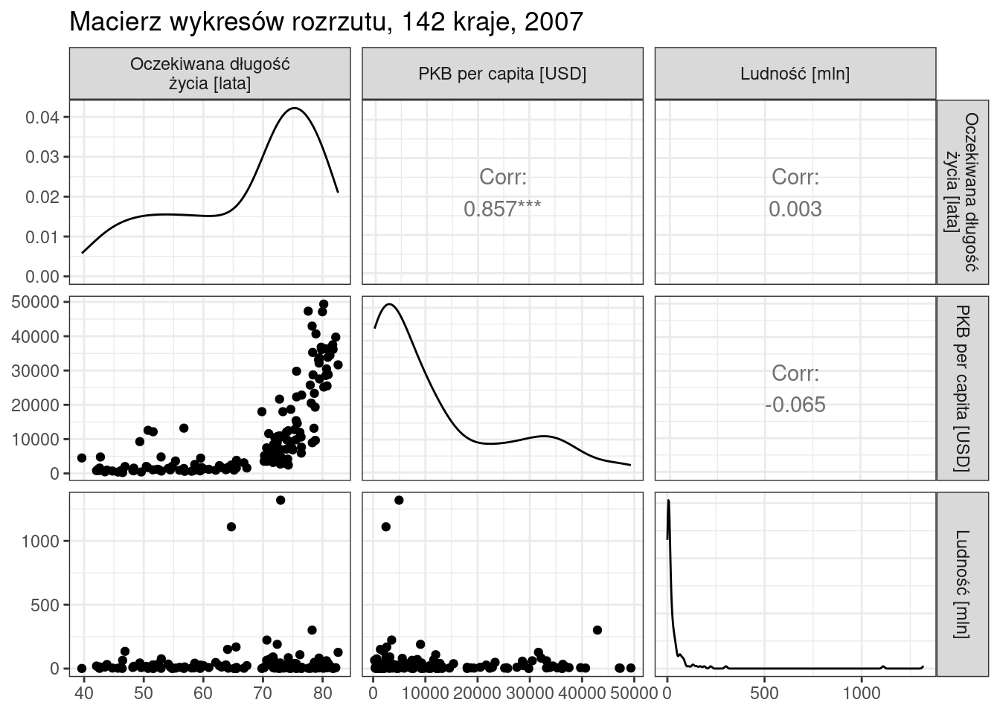
dane2007 |>
select(lifeExp, gdpPercap, pop) |>
ggcorr(method = c("pairwise", "spearman"), label = TRUE, label_round = 2) +
labs(title = "Współczynniki korelacji Spearmana, 142 kraje, 2007")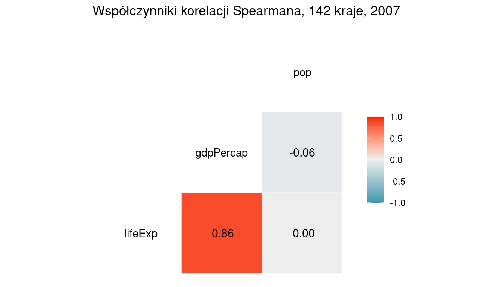
A.7 Zmiany w czasie
Wykresy zmian w czasie przedstawiają wartości w kolejnych latach; wartości mierzone w czasie łączy linia, a zakres wartości w danym roku — odcinek albo wstęga.
A.7.1 Wykres liniowy
Dodatkowe przykłady: R Graph Gallery — wykres liniowy
Linia łączy kolejne wartości w czasie. geom_line() rysuje wartości z danych, a stat_summary(geom = "line") — wartość obliczoną w każdym roku, np. średnią.
dane |>
filter(kraj %in% c("Polska", "Niemcy", "Hiszpania", "Portugalia")) |>
ggplot(aes(x = year, y = lifeExp, colour = kraj)) +
geom_line() +
labs(title = "Oczekiwana długość życia w czterech krajach, 1952–2007",
x = "Rok", y = "Oczekiwana długość życia [lata]", colour = "Kraj") +
theme_bw()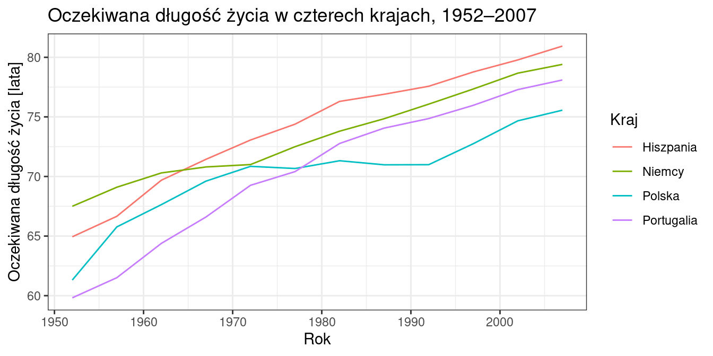
ggplot(dane, aes(x = year, y = lifeExp, colour = kontynent)) +
stat_summary(fun = mean, geom = "line") +
labs(title = "Średnia oczekiwana długość życia według kontynentu, 1952–2007",
x = "Rok", y = "Średnia oczekiwana długość życia [lata]", colour = "Kontynent") +
theme_bw()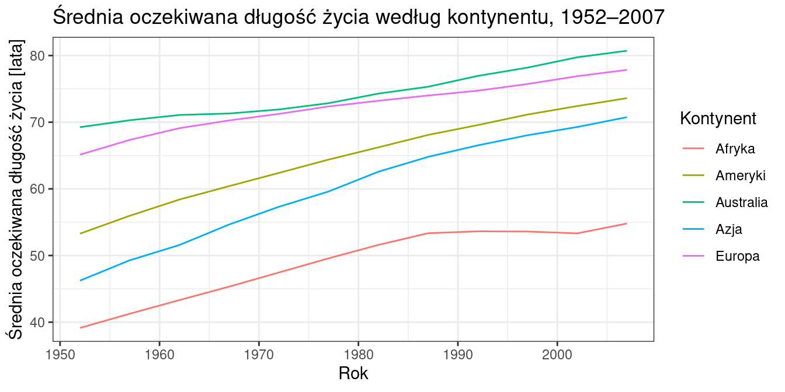
A.7.2 Punkt z zakresem
Dodatkowe przykłady: R Graph Gallery — słupki błędu, w tym geom_pointrange(); przykłady galerii przedstawiają odchylenie standardowe, błąd standardowy i przedział ufności.
geom = "pointrange" rysuje punkt (fun) i odcinek od fun.min do fun.max, np. średnią oraz wartość najmniejszą i największą w każdym roku.
ggplot(dane, aes(x = year, y = lifeExp)) +
stat_summary(fun = mean, fun.min = min, fun.max = max, geom = "pointrange") +
labs(title = "Oczekiwana długość życia: średnia, minimum i maksimum, 1952–2007",
x = "Rok", y = "Oczekiwana długość życia [lata]") +
theme_bw()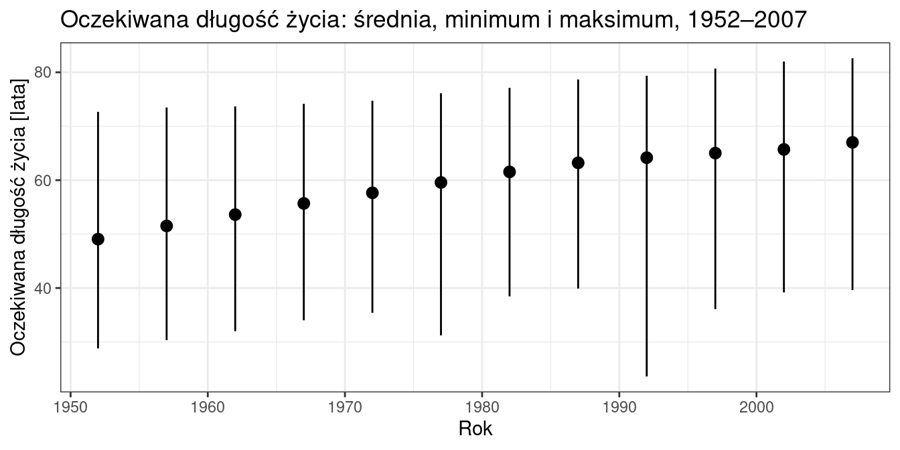
A.7.3 Wykres wstęgowy
Dodatkowe przykłady: R Graph Gallery — wykres wstęgowy
Wstęga obejmuje zakres wartości między dwiema granicami, np. od minimum do maksimum w każdym roku.
ggplot(dane, aes(x = year, y = lifeExp)) +
stat_summary(fun.min = min, fun.max = max, geom = "ribbon", alpha = 0.4) +
stat_summary(fun = mean, geom = "line") +
labs(title = "Oczekiwana długość życia: rozstęp (wstęga) i średnia (linia), 1952–2007",
x = "Rok", y = "Oczekiwana długość życia [lata]") +
theme_bw()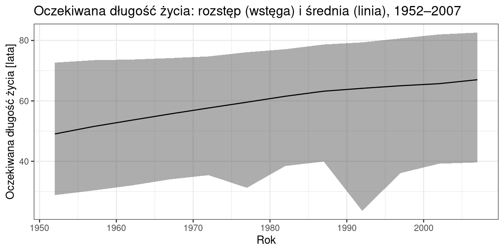
A.8 Dane przestrzenne
Przygotowanie danych przestrzennych i pozostałe mapy wykorzystywane w skrypcie opisuje Rozdział 5.
A.8.1 Mapa: kolor obszaru
Dodatkowe przykłady: R Graph Gallery — kartogram
Kolor obszaru, np. państwa, przedstawia wartość zmiennej. Granice państw pochodzą z pakietu rnaturalearth; tabelę z danymi łączy się z granicami według kodu kraju (Sekcja 21.5).
library(sf)
library(rnaturalearth)
swiat <- ne_countries(scale = "medium", returnclass = "sf")
swiat |>
left_join(dane2007, by = c("iso_a3_eh" = "Kod")) |>
ggplot(aes(fill = lifeExp)) +
geom_sf() +
labs(title = "Oczekiwana długość życia, 2007",
fill = "Oczekiwana długość\nżycia [lata]") +
theme_bw()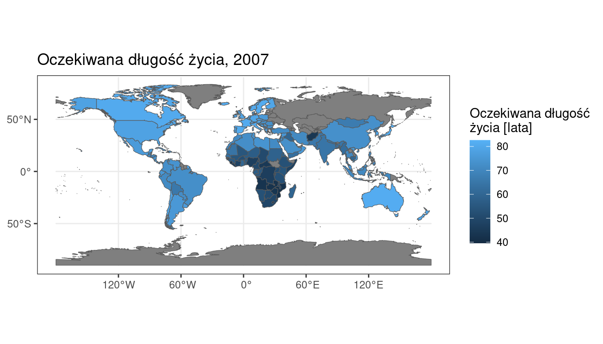
A.8.2 Kartodiagram
Dodatkowe przykłady: R Graph Gallery — mapa ze znakami proporcjonalnymi do wartości
Wielkość znaku umieszczonego w położeniu obiektu przedstawia wartość zmiennej, np. liczbę dni z opadem na stacji meteorologicznej (Sekcja 5.7.5). Kartodiagram strukturalny przedstawia w położeniu obiektu strukturę zjawiska, np. wykresami kołowymi (Sekcja 5.7.7). Przykłady z kodem zawiera raport o warunkach meteorologicznych w 2020 roku (Sekcja 22.5.3).
A.9 Panele
Dodatkowe przykłady: R Graph Gallery — panele
Każdy z powyższych wykresów można podzielić na panele według zmiennej jakościowej — facet_wrap(~ zmienna) (Sekcja 4.3).
ggplot(dane2007, aes(x = gdpPercap, y = lifeExp)) +
geom_point() +
scale_x_log10() +
facet_wrap(~ kontynent) +
labs(title = "Oczekiwana długość życia a PKB per capita według kontynentu, 2007",
x = "PKB per capita [USD, skala logarytmiczna]",
y = "Oczekiwana długość życia [lata]") +
theme_bw()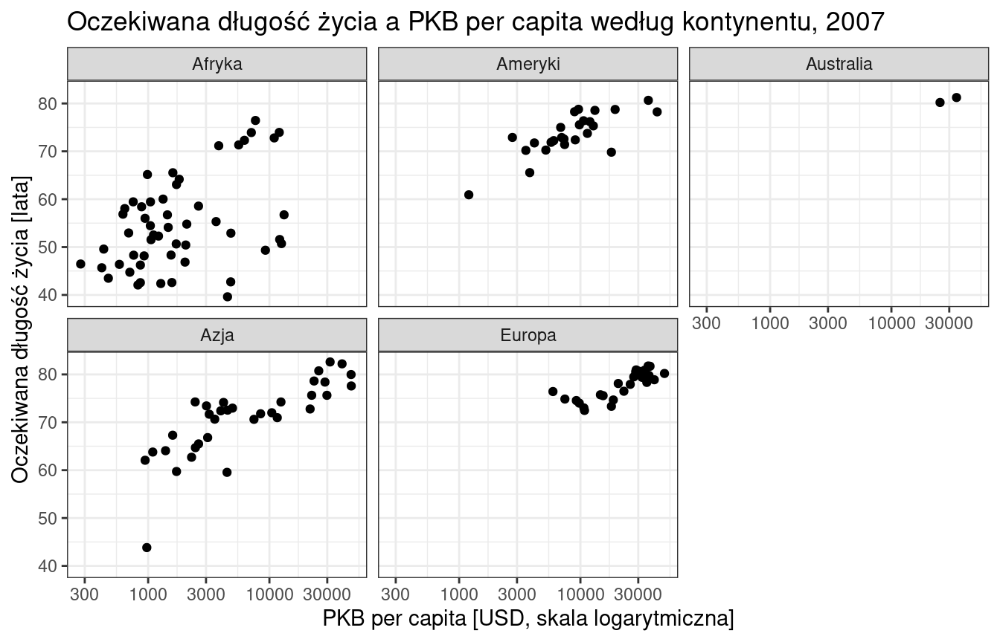
A.10 Źródła
- Wilke C.O., 2019. Fundamentals of Data Visualization, rozdział „Directory of visualizations”: https://clauswilke.com/dataviz/directory-of-visualizations.html.
- Holtz Y. The R Graph Gallery: https://r-graph-gallery.com/.